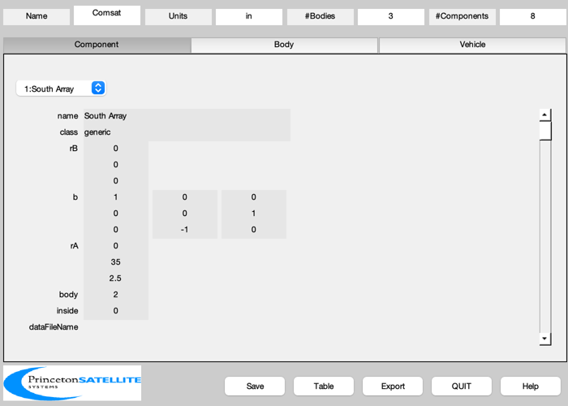
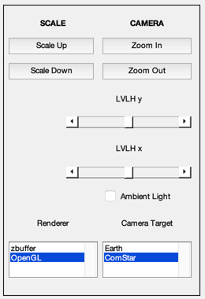
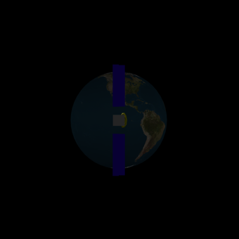
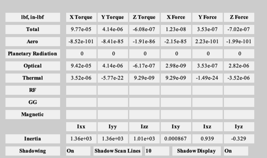
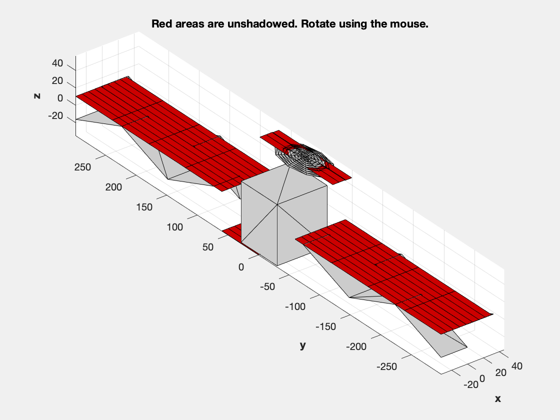

Demonstrate disturbance modeling with shadowing.
This example runs the disturbance model in single point mode, each call produces disturbance torques for a single point in time. You can run DrawSCPlugIn at the same time to make certain that the sun is in the right place and the spacecraft orientation and orbit are correct. ------------------------------------------------------------------------- See also BuildCADModel, CreateComponent, ArrayPatch, QForm, QLVLH, QPose, FindSolsticeOrEquinox, RVFromKepler, Disturbances, SunV1, DrawSCPlugIn -------------------------------------------------------------------------
Contents
%------------------------------------------------------------------------------- % Copyright (c) 1998-2003 Princeton Satellite Systems, Inc. % All rights reserved. %-------------------------------------------------------------------------------
Parameters
% Spacecraft dimensions
xW = 66/2;
yW = 62/2;
zW = 74/2;
Build the CAD model
BuildCADModel( 'initialize' ); BuildCADModel( 'set name' , 'Comsat' ); BuildCADModel( 'set units', 'in' ); % Core m = struct(); m.name = 'Core'; m.rHinge = [0;0;0]; m.bHinge.b = eye(3); m.previousBody = []; BuildCADModel('add body', m ); % Solar array m.name = 'South Solar Array'; m.rHinge = [0 0 0]'; m.bHinge.b = eye(3); m.previousBody = 1; BuildCADModel('add body', m ); m.name = 'North Solar Array'; m.rHinge = [0 0 0]'; m.bHinge.b = eye(3); m.previousBody = 1; BuildCADModel('add body', m ); % This creates the connections between the bodies BuildCADModel( 'compute paths' ); % The solar array when it is earth pointing dArray = struct(); dArray.z = 76.25; dArray.x = 33; dArray.nZ = 3; dArray.nX = 2; dArray.theta = (10*pi/180)*[1 -1]; m = ArrayPatch( dArray ); % Only use the front of the array m.v(:,3) = m.v(:,3) + dArray.z/2; b = [1 0 0;0 0 1;0 -1 0]; mass = struct(); mass.mass = 10/(9.806/0.0254); mass.inertia = diag([10 1 10]); mass.cM = [0;66;0]; magnetic = struct(); magnetic.dipole = [0;5;0]; m = CreateComponent( 'make', 'generic', 'vertex', m.v, 'face', m.f, 'rA', [0 35 2.5]',... 'b', b, 'name', 'South Array', 'body', 2, 'mass', mass, ... 'faceColor', 'solar cell',... 'dipole', magnetic.dipole, 'inside', 0 ); BuildCADModel( 'add component', m ); mass.cM = [0;-66;0]; m.v(:,3) = - m.v(:,3); m.f = fliplr(m.f); m = CreateComponent( 'make', 'generic', 'vertex', m.v, 'face', m.f, 'rA', [0 -35 2.5]',... 'b', b, 'name', 'North Array', 'body', 3, 'mass', mass, ... 'faceColor', 'solar cell',... 'dipole', magnetic.dipole, 'inside', 0 ); BuildCADModel( 'add component', m ); % Struts are added just for the picture They are 'inside' so they will not be % considered in the disturbance analysis. y = 76.25/2; w = 11; theta = 10*pi/180; b = 1; s = y*sin(theta)/2; c = y*cos(theta); m.v = [ b 0 0;... -b 0 0;... w+b -s c;... w-b -s c;... b 0 0;... -b 0 0;... 2*w+b -s c;... 2*w-b -s c]; m.f = [ 1 2 4 3;... 5 6 8 7]; bStrut = [1 0 0;0 0 1;0 -1 0]; m = CreateComponent( 'make', 'generic', 'vertex', m.v, 'face', m.f, 'rA', [0 35 2.5]',... 'b', bStrut, 'name', 'South Array Strut 1', 'body', 2, 'mass', mass, ... 'faceColor', 'aluminum' ); BuildCADModel( 'add component', m ); m.v(:,3) = -m.v(:,3); m = CreateComponent( 'make', 'generic', 'vertex', m.v, 'face', m.f, 'rA', [0 -35 2.5]',... 'b', bStrut, 'name', 'North Array Strut 1', 'body', 3, 'mass', mass, ... 'faceColor', 'aluminum' ); BuildCADModel( 'add component', m ); m.v = [ b 0 0;... -b 0 0;... -w+b s c;... -w-b s c;... b 0 0;... -b 0 0;... -2*w+b s c;... -2*w-b s c]; m.f = [ 1 2 4 3;... 5 6 8 7]; m = CreateComponent( 'make', 'generic', 'vertex', m.v, 'face', m.f, 'rA', [0 35 2.5]',... 'b', bStrut, 'name', 'South Array Strut 2', 'body', 2, 'mass', mass, ... 'faceColor', 'aluminum' ); BuildCADModel( 'add component', m ); m.v(:,3) = -m.v(:,3); m = CreateComponent( 'make', 'generic', 'vertex', m.v, 'face', m.f, 'rA', [0 -35 2.5]',... 'b', bStrut, 'name', 'North Array Strut 2', 'body', 3, 'mass', mass, ... 'faceColor', 'aluminum' ); BuildCADModel( 'add component', m ); % Core components mass.mass = 1000; mass.inertia = diag([1000 1000 1000]); mass.cM = [0;0;0]; magnetic.dipole = [5;5;5]; m = CreateComponent( 'make', 'box', 'x', 2*0.95*xW, 'y', 2*0.95*yW, 'z', 2*0.95*zW,... 'rA',[0;1;0],'name', 'Core Box', 'mass', mass, ... 'body', 1, 'inside', 0, ... 'faceColor', [0.7 0.7 0.7], 'edgeColor', [0.7 0.7 0.7],... 'dipole', magnetic.dipole ); BuildCADModel( 'add component', m ); rF = struct(); rF.flux = 600; rF.u = [0;0;1]; rF.r = [0;0;0]; m = CreateComponent( 'make', 'ellipsoid', 'abc', [30 60 10], 'thetaUpper', pi/4,... 'n', 10, 'rA',[25;0;zW+10],'name', 'Elliptical reflector', ... 'faceColor', [0.5 0.5 0], 'edgeColor', [1 1 1],... 'body', 1, 'inside', 0, ... 'flux',rF.flux, 'u',rF.u, 'r',rF.r ); BuildCADModel( 'add component', m ); BuildCADModel( 'update body mass properties' ); BuildCADModel( 'create body arrays' ); % for shadowing g = BuildCADModel('get model');
Simulation
% Ephemeris jD0 = FindSolsticeOrEquinox('spring equinox',2002); nDays = 4; nSamp = 200; t = linspace(0,nDays,nSamp)*86400; jD = jD0 + t/86400; [rECI, vECI] = RVFromKepler( [42167 0 0 0 0 0], t ); g.body(2).bHinge.angle = 0; g.body(2).bHinge.axis = 2; g.body(3).bHinge.angle = 0; g.body(3).bHinge.axis = 2; % Initialize the picture g = SetCADState(g,rECI(:,1), vECI(:,1)); g = SetCADQuaternion(g,QLVLH(rECI(:,1), vECI(:,1))); g.name = 'ComStar'; tag3DWindow = DrawSCPlugIn( 'initialize', g, [], [], 'Earth', jD(1) ); % Disturbances d = Disturbances( 'defaults' ); solarFlux = 1358; d.s = solarFlux*SunV1(jD(1)); % Watts/m^2 d.tSamp = 10; d.shadow = 1; d.showScans = 1; d.nScanLines = 10; d.units = 'in'; d.planet = 'earth'; d.mu = 3.986014e5; d.r = rECI(:,1); d.b = [0;0;71]*1.e-9; d.v = vECI(:,1); d.tGas = 900; d.mGas = 0.02; d.computePR = 1; d.computeAero = 1; % Initialize the disturbance model hD = Disturbances( 'init', g, d ); % Loop through the disturbances TimeDisplay( 'initialize', 'SCDisturb', nSamp ); for k = 1:nSamp % Sun unit vector in the ECI frame uSun = SunV1(jD(k)); % CAD body structure g = SetCADState(g,rECI(:,k), vECI(:,k)); g = SetCADQuaternion(g,g.qLVLH); uSunLVLH = QForm( g.qLVLH, uSun ); theta = atan2( uSunLVLH(1), uSunLVLH(3) ); g.body(2).bHinge.angle = -theta; g.body(3).bHinge.angle = -theta; % Draw the picture DrawSCPlugIn( 'update spacecraft', tag3DWindow, g, jD(k) ); % Update the disturbances d.s = 1367*uSun; % W/m^2 d.r = rECI(:,k); d.v = vECI(:,k); [f, t] = Disturbances( 'run', g, d, hD ); TimeDisplay( 'update' ); end TimeDisplay( 'close' ); %--------------------------------------
ALim: [0 2]
ALimMode: 'auto'
AlphaScale: 'linear'
Alphamap: [1×64 double]
AmbientLightColor: [1 1 1]
BeingDeleted: off
Box: off
BoxStyle: 'back'
BusyAction: 'queue'
ButtonDownFcn: ''
CLim: [0 255]
CLimMode: 'auto'
CameraPosition: [-1.5348e+07 -5.7002e+07 12716]
CameraPositionMode: 'manual'
CameraTarget: [-1.0963e+07 -4.0717e+07 9082.9]
CameraTargetMode: 'manual'
CameraUpVector: [5.6053e-05 0.00020798 1]
CameraUpVectorMode: 'manual'
CameraViewAngle: 30
CameraViewAngleMode: 'manual'
Children: [6×1 Graphics]
Clipping: on
ClippingStyle: '3dbox'
Color: [0 0 0]
ColorOrder: [7×3 double]
ColorOrderIndex: 1
ColorScale: 'linear'
Colormap: [256×3 double]
ContextMenu: [0×0 GraphicsPlaceholder]
CreateFcn: ''
CurrentPoint: [2×3 double]
DataAspectRatio: [1 1 1]
DataAspectRatioMode: 'manual'
DeleteFcn: ''
FontAngle: 'normal'
FontName: 'Helvetica'
FontSize: 10
FontSizeMode: 'auto'
FontSmoothing: on
FontUnits: 'points'
FontWeight: 'normal'
GridAlpha: 0.15
GridAlphaMode: 'auto'
GridColor: [0.15 0.15 0.15]
GridColorMode: 'auto'
GridLineStyle: '-'
HandleVisibility: 'on'
HitTest: on
InnerPosition: [0 0 340 340]
Interactions: [1×1 matlab.graphics.interaction.interface.DefaultAxesInteractionSet]
Interruptible: on
LabelFontSizeMultiplier: 1.1
Layer: 'bottom'
Layout: [0×0 matlab.ui.layout.LayoutOptions]
Legend: [0×0 GraphicsPlaceholder]
LineStyleOrder: '-'
LineStyleOrderIndex: 1
LineWidth: 0.5
MinorGridAlpha: 0.25
MinorGridAlphaMode: 'auto'
MinorGridColor: [0.1 0.1 0.1]
MinorGridColorMode: 'auto'
MinorGridLineStyle: ':'
NextPlot: 'replace'
NextSeriesIndex: 1
OuterPosition: [-44.2 -37.4 416.5 402.9]
Parent: [1×1 Figure]
PickableParts: 'visible'
PlotBoxAspectRatio: [1.3811 3.7151 1]
PlotBoxAspectRatioMode: 'auto'
Position: [0 0 340 340]
PositionConstraint: 'innerposition'
Projection: 'perspective'
Selected: off
SelectionHighlight: on
SortMethod: 'depth'
Tag: 'Spacecraft'
TickDir: 'out'
TickDirMode: 'auto'
TickLabelInterpreter: 'tex'
TickLength: [0.01 0.025]
TightInset: [0 0 0 0]
Title: [1×1 Text]
TitleFontSizeMultiplier: 1.1
TitleFontWeight: 'bold'
Toolbar: [1×1 AxesToolbar]
Type: 'axes'
Units: 'pixels'
UserData: []
View: [-62.829 0.080078]
Visible: off
XAxis: [1×1 NumericRuler]
XAxisLocation: 'bottom'
XColor: [0.15 0.15 0.15]
XColorMode: 'auto'
XDir: 'normal'
XGrid: on
XLabel: [1×1 Text]
XLim: [-1.1239e+07 6378100]
XLimMode: 'auto'
XMinorGrid: off
XMinorTick: off
XScale: 'linear'
XTick: [1×9 double]
XTickLabel: {9×1 cell}
XTickLabelMode: 'auto'
XTickLabelRotation: 0
XTickMode: 'auto'
YAxis: [1×1 NumericRuler]
YAxisLocation: 'left'
YColor: [0.15 0.15 0.15]
YColorMode: 'auto'
YDir: 'normal'
YGrid: on
YLabel: [1×1 Text]
YLim: [-4.1012e+07 6378100]
YLimMode: 'auto'
YMinorGrid: off
YMinorTick: off
YScale: 'linear'
YTick: [-40000000 -30000000 -20000000 -10000000 0]
YTickLabel: {5×1 cell}
YTickLabelMode: 'auto'
YTickLabelRotation: 0
YTickMode: 'auto'
ZAxis: [1×1 NumericRuler]
ZColor: [0.15 0.15 0.15]
ZColorMode: 'auto'
ZDir: 'normal'
ZGrid: on
ZLabel: [1×1 Text]
ZLim: [-6378100 6378100]
ZLimMode: 'auto'
ZMinorGrid: off
ZMinorTick: off
ZScale: 'linear'
ZTick: [1×7 double]
ZTickLabel: {7×1 cell}
ZTickLabelMode: 'auto'
ZTickLabelRotation: 0
ZTickMode: 'auto'
   